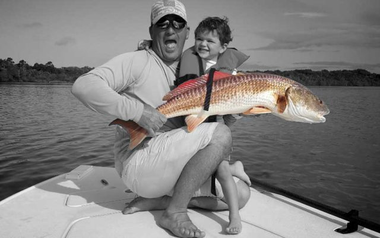
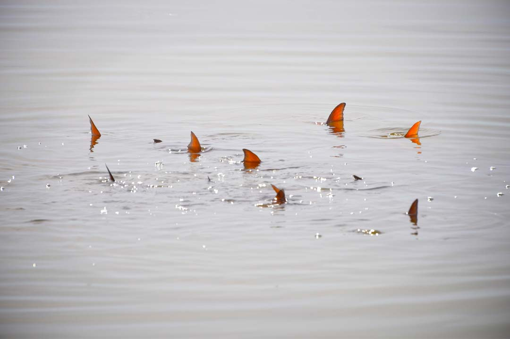
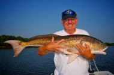
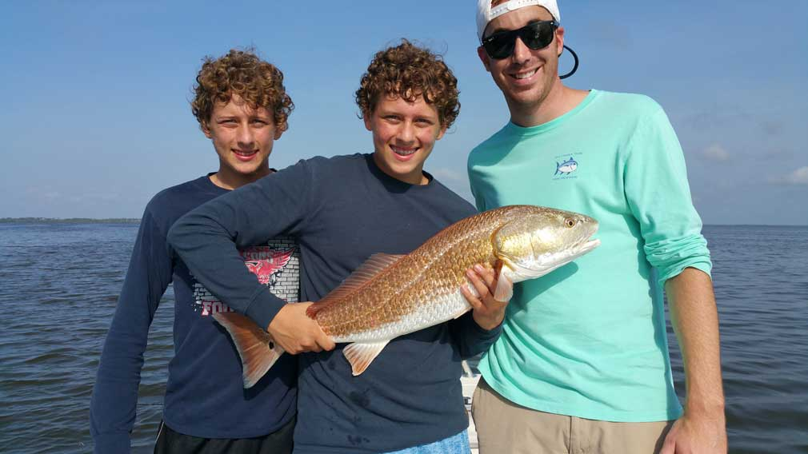

Orlando Fishing
Charters
ONLY $149 per person For A Limited Time
REDFISH - TARPON - SEA TROUT - SNOOK
Just 45 minutes From Orlando Florida and all the major theme parks
US coast guard licensed and commercially insured
ORLANDO SALTWATER FISHING
Orlando Fishing Charters are just a short drive from the area attractions, visitors can find some of the best fishing in the state, not to mention the best Red fishing in the World. This area of Central Florida offers both beginners and expert anglers the opportunity to catch record sized Redfish, Sea Trout, Snook, Tarpon and more. You’re sure to see “tailing” Redfish, Snook hiding in mangroves, rolling Tarpon, Sea Trout, as well as Dolphins, Manatees and many other animals in their natural environment. Redfish, one of the more popular fish species in the area, and one that most anglers and fishing guides target. They are exceptional fighters and can be caught year round. Also known as Red Drum, these fish can exceed forty plus pounds during the summer when they gather and spawn. During the winter months, Redfish catches normally run in the three to twelve pound range. Fishing guides can catch numerous Redfish per charter, and stories of one hundred Redfish per day is not unheard of. The crystal clear, gin like color of the water during the winter makes sight fishing, and finding fish much easier for the trained and untrained eye. Flataddicted will give both beginners and expert anglers an opportunity to sight cast in shallow waters to all the area has to offer. Fishing the waters near Orlando are the best-kept secrets in the shallow water fishing arena. Whether you are in town for a vacation or a convention this is a one-of-a-kind experience you are sure to never forget. By booking a trip with Flataddicted, we will make sure the trip is a success every time out. From a friendly voice on the phone to a full time guide on the water 250 days a year. Flataddicted is the best choice for your day out on the water. Flataddicted has been featured in many fishing magazines and numerous times on ESPN radio. Guided television celebrities and appeared on several nationally televised fishing shows. Make no mistake you have found the hardest working and most energetic guide on the water.
Weekly Updates
|  |
UNCATEGORIZEDIncredible Tailing Redfish Action!Incredible Tailing Redfish Action! Winter is that magical time of the year when Redfish really turn on and start offering pure sight casting opportunities. For the past 3 to … |
|
|
|
|  |
UNCATEGORIZEDHuge Mosquito Lagoon Red FishHuge Mosquito Lagoon Red Fish are here in Florida once again and that means it’s time for the fall Mullet run. The Mullet run triggers a feeding frenzy for big … |
|
|
|
|  |
UNCATEGORIZEDOrlando Fishing TripOrlando fishing trips and guided fishing tours near orlando have been on a rise over the past few years. Vacationing families from around the globe have discovered phenomenal fishing just … |
|
|
|
Weekly Updates
Incredible Tailing Redfish Action! Winter is that magical time of the year when Redfish really turn on and start offering pure sight casting opportunities. For the past 3 to …
Huge Mosquito Lagoon Red Fish are here in Florida once again and that means it’s time for the fall Mullet run. The Mullet run triggers a feeding frenzy for big …
Orlando fishing trips and guided fishing tours near orlando have been on a rise over the past few years. Vacationing families from around the globe have discovered phenomenal fishing just …